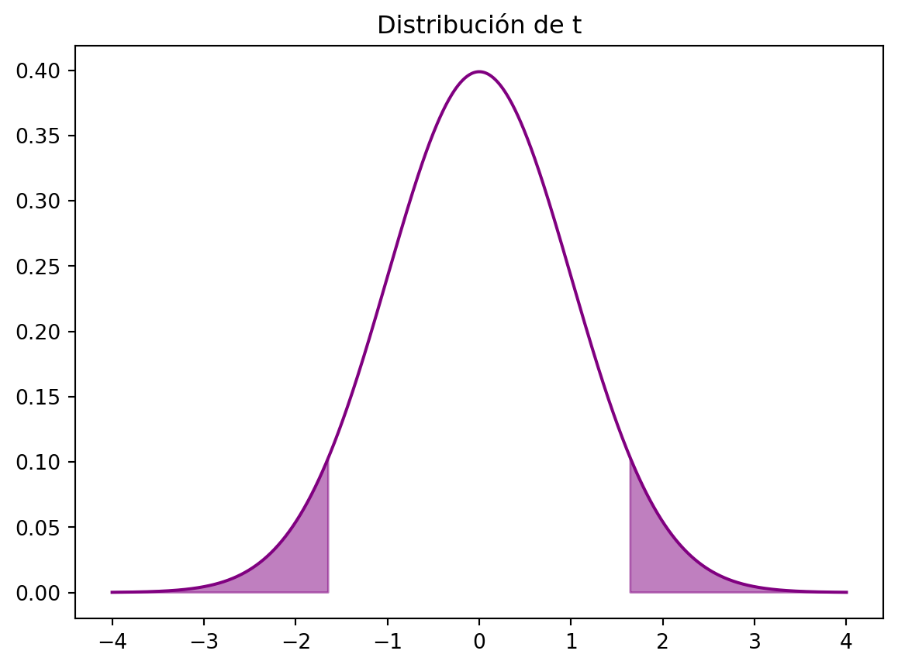
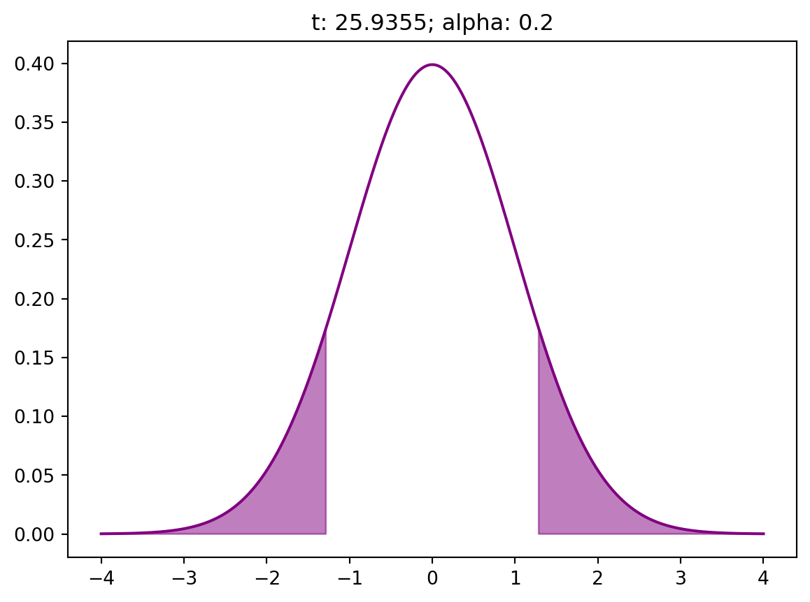
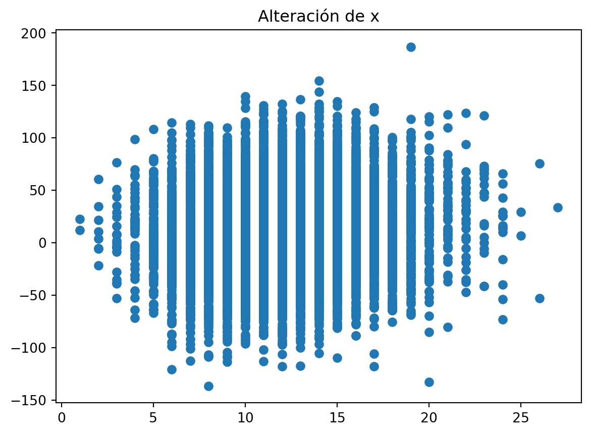

import numpy as np
import statsmodels.api as sm
import scipy.stats as stats
import matplotlib.pyplot as pltEstadísticos en regresión lineal por variable
datos
Revisión paso a paso de cómo calcular el p-valor de una variable en una regresión lineal
Intro y datos
Voy a revisar aquí cómo se calcula el p-valor de una variable en una regresión lineal, porque es una cosa que siempre se me olvida. Y quiero tenerlo a mano.
Además, lo voy a hacer en Python porque me gusta sufrir.
Me invento unos datos que me sirvan para ajustar una regresión lineal:
\[ y = \beta_0 + \beta_1 \cdot x + \varepsilon, \]
donde \(\beta_0 = - 5\), \(\beta_1 = 3\) y \(x ~ \mbox{Poisson(12)}\) y \(\varepsilon \sim \cal{N}(0, 10)\).
nobs = 10000
x = np.random.poisson(12, nobs)
noise = np.random.normal(0, 10, nobs)
y = 3 * x - 5 + noiseAhora ajusto la regresión lineal con statsmodels. ¿Se puede hacer con sklearn? Pues imagino que sí, pero necesitaré luego acceder a detalles del modelo a los que no sé acceder con sklearn.
X = sm.add_constant(x)
model = sm.OLS(y, X).fit()
print(model.summary()) OLS Regression Results
==============================================================================
Dep. Variable: y R-squared: 0.527
Model: OLS Adj. R-squared: 0.527
Method: Least Squares F-statistic: 1.115e+04
Date: Mon, 19 Aug 2024 Prob (F-statistic): 0.00
Time: 23:37:26 Log-Likelihood: -37190.
No. Observations: 10000 AIC: 7.438e+04
Df Residuals: 9998 BIC: 7.440e+04
Df Model: 1
Covariance Type: nonrobust
==============================================================================
coef std err t P>|t| [0.025 0.975]
------------------------------------------------------------------------------
const -5.0025 0.357 -14.009 0.000 -5.702 -4.303
x1 3.0140 0.029 105.585 0.000 2.958 3.070
==============================================================================
Omnibus: 7.083 Durbin-Watson: 2.023
Prob(Omnibus): 0.029 Jarque-Bera (JB): 7.775
Skew: -0.014 Prob(JB): 0.0205
Kurtosis: 3.134 Cond. No. 45.0
==============================================================================
Notes:
[1] Standard Errors assume that the covariance matrix of the errors is correctly specified.Para calcular el p-valor de \(x\) en el modelo necesito el estadístico \(t\). Para eso necesito, aparte del valor del coeficiente, el error estándar de la variable.
Error estándar
Este error estándar relaciona la varianza de la variable con la varianza de los errores:
- Si una variable tiene poca varianza y los errores tienen mucha, la variable está aportando poco al modelo.
- Si una variable tiene una varianza alta, estará contribuyendo más al modelo.
- Si un modelo tiene errores con varianza baja, el error estándar de la variable tenderá a ser bajo.
Cuanto mayor sea el error estándar, menor siginificatividad tendrá la variable. Por lo tanto, con un varianza del error pequeña, más fácil será que la variable aparezca significativa.
standard_error = np.sqrt(np.sum(model.resid ** 2) / (len(x) - 2))
standard_error_x = standard_error / np.sqrt(nobs) / np.std(x)El error estándar de los residuos es 9.975818941126349 y el de la variable es 0.028545857080981202.
El error estándar del intercept es más lío de calcular e interpretar; la idea intuitiva es que tiene en cuenta la varianza de todas las variables explicativas a la vez.
standard_error * np.sqrt(1 / nobs + np.mean(x) ** 2 / np.sum((x - np.mean(x)) ** 2))0.3570820876215312Estadístico \(t\)
El estadístico \(t\) se calcula como
\[ t = \frac{\mbox{coef}\ x}{\mbox{std error}\ x}. \]
- Si la variable tiene un error pequeño, el estadístico crece (eso es bueno para la significatividad de la variable).
- A su vez, si el coeficiente es alto (en valor absoluto), entonces también crece.
- El estadístico decrece con coeficientes bajos o con errores altos (es decir, la variable parecerá no significativa).
# label: t-stat
t_stat_x = np.abs(model.params[1]) / standard_error_x
t_stat_x105.58474083439029p-valor
Ahora hay que ver qué valor es esperable para el estadístico \(t\).
Pon que trabajas al nivel de confianza del 90%. Hace falta calcular el \(t\) que deja el 5% a un lado de la distribución, y el que lo deja al otro lado. Como la distribución es simétrica, solo calculo uno:
percentile = stats.t.ppf(0.95, nobs - 2)
percentile1.6450060485564049Ahora tienes la distribución de \(t\). Si \(t\) cae en el área sombreada (el 10% extremo) entonces la probabilidad de observar tus datos en el supuesto de que la variable no sea significativa (\(H_0\) o \(\beta_1 = 0\)) es menor de 0,10.
xx = np.linspace(-4, 4, 1000)
yy = stats.t.pdf(xx, nobs - 2)
plt.plot(xx, yy, color='#800080')
# plot the t distribution and fill the 5% outside
plt.fill_between(xx, yy, where=(xx < -percentile) | (xx > percentile), alpha=0.5, color='#800080')
plt.title("Distribución de t")
plt.show()
Concretamente, la probabilidad para el estadístico \(t\) que has obtenido es muy muy baja.
# p value for coefficient, extracted from
# t distribution
stats.t.sf(t_stat_x, nobs - 2) * 20.0Idea intuitiva
Lo que estás haciendo con esto es calcular la probabilidad de obtener los datos que tienes si asumes que las dos variables no tienen relación.
Imagina que estás midiendo la relación entre el consumo de torreznos (gramos de torreznos semanales) y los niveles de colesterol (ni idea de qué unidad se usa en los análisis).
La forma de pensar con este análisis sería:
- Asumes que no hay relación
- Tienes unos datos de varias personas, con su consumo de torreznos y el nivel de colesterol.
- Haces el cálculo de la regresión.
- El p-valor es cómo de probables son tus datos.
- Si tu p-valor es pequeño, entonces los datos son poco probables en el supuesto de que no haya relación. Así que deduces que sí hay relación.
¿Qué quiero decir con que tu p-valor sea pequeño?
Me refiero a que, previamente, habrás definido un umbral. Que tu p-valor sea pequeño significa que está por debajo de ese umbral.
¿Cuál debería ser tu umbral? Normalmente es 0,05. Eso se traduce en que:
- Si la probabilidad de observar tus datos en el supuesto de que no hay relación (p-valor) es menor de 0,05, entonces es que sí hay relación.
- Si la probabilidad (p-valor) es mayor, entonces es que no hay relación.
Y te pregunto yo. ¿Cuál debería ser para ti la probabilidad? Por ejemplo, si el p-valor es 0,20, ¿automáticamente concluyes que no hay relación?
¿Por qué?
Si tu p-valor es ese, estarías diciendo que la probabilidad de observar tus datos cuando no hubiera relación real es de un 20%. Quizá en un caso médico tienes que tener cuidado, como con lo del colesterol. ¿Pero qué pasa si estás midiendo la eficacia de una acción empresarial?
Un ejemplo más extremo
En lugar de utilizar la propia variable \(x\) para ajustar el modelo, podemos alterar \(x\) introduciendo ruido en ella. Eso lo haré metiendo ruido en la variable, con media 0 y una desviación típica que variaré en varias pruebas.
Por ahora, la desviación típica del ruido sobre \(x\) es 1.
Voy a poner mucho más ruido. Fíjate en cuánto decrece el estadístico \(t\) (y en consecuencia cuánto aumenta el p-valor).

stats.t.sf(0.5341, 9998)0.29664211233560395